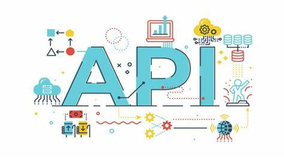
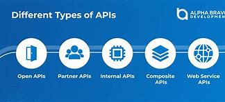
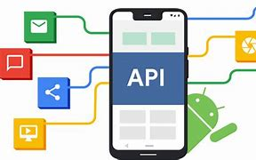
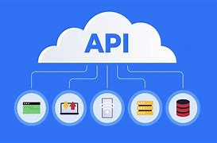

¿Qué son las APIs?
Son mecanismos que permiten a dos componentes de software comunicarse
entre sí mediante un conjunto de definiciones y protocolos.
Una API (interfaz de programación de aplicaciones), es un conjunto de
reglas definidas que permiten que diferentes aplicaciones se comuniquen
entre sí. Actúa como una capa intermedia que procesa las transferencias
de datos entre sistemas, permitiendo a las empresas abrir sus datos y
funcionalidades de aplicaciones a desarrolladores externos, socios
comerciales y departamentos internos dentro de sus empresas.
Ejemplos de APIS
- Las API de Google: Búsqueda, Gmail, Traductor o Maps.
- Paypal
- Incrustración de Videos de Youtube
- WhatsApp Business
- Instagram, Facebook

Ventajas de las APIs
- Automatización y Eficiencia
Las APIs permiten la automatización de procesos y la comunicación entre
sistemas sin intervención manual.
🔹 Ejemplo: Un CRM puede actualizar automáticamente la información
de clientes en un sistema de facturación.
- Reutilización y Modularidad
Los desarrolladores pueden reutilizar APIs existentes en lugar de desarrollar
funciones desde cero, lo que reduce el tiempo y esfuerzo.
🔹 Ejemplo:En lugar de programar un sistema de autenticación, se usa OAuth 2.0 (Google, Facebook, etc.).
- Interoperabilidad entre Sistemas
Las APIs permiten que diferentes aplicaciones, lenguajes de programación y plataformas se comuniquen entre sí.
🔹 Ejemplo:Una app móvil puede consumir una API REST alojada en un servidor en la nube.
- Escalabilidad y Flexibilidad
Las APIs facilitan la creación de arquitecturas escalables mediante microservicios y servicios en la nube.
🔹 Ejemplo: Netflix usa APIs para manejar usuarios, contenido y transmisión de video de manera modular.
- Integración con Tecnologías Avanzadas
Las APIs permiten acceder a servicios de inteligencia artificial, machine learning, blockchain, etc.
🔹 Ejemplo: OpenAI API permite integrar ChatGPT en chatbots y asistentes virtuales.
- Seguridad y Control de Acceso
Las APIs modernas implementan autenticación y autorización mediante tokens, OAuth 2.0 y JWT, lo que permite un mejor control sobre quién accede a los datos.
🔹 Ejemplo: Una API bancaria requiere autenticación con tokens para cada transacción.
- Monetización y Nuevas Oportunidades de Negocio
Muchas empresas ofrecen sus APIs como productos, generando ingresos a través de suscripciones o pagos por uso.
🔹 Ejemplo: Google Maps API cobra a empresas que la usan intensivamente en sus plataformas.

Desventajas de las APIs
- Complejidad en la Implementación
Algunas APIs requieren conocimientos avanzados, documentación extensa y configuraciones complejas para su integración.
🔹 Ejemplo: APIs con autenticación OAuth pueden ser difíciles de configurar para desarrolladores novatos.
- Dependencia de Terceros
Si una API de un servicio externo cambia o deja de funcionar, puede afectar gravemente una aplicación.
🔹 Ejemplo:Un e-commerce que usa una API de pagos puede quedarse sin servicio si la API falla.
- Seguridad y Vulnerabilidades
Si no se implementan correctamente, las APIs pueden ser puntos débiles en la seguridad de una aplicación.
🔹 Ejemplo:APIs mal protegidas pueden ser vulnerables a ataques como inyección de SQL, Man-in-the-Middle o DDoS.
- Latencia y Problemas de Rendimiento
Las solicitudes a una API externa pueden generar retrasos en la respuesta, afectando la experiencia del usuario.
🔹 Ejemplo: Un sitio web que carga contenido desde una API de terceros puede volverse lento si la API responde con latencia alta.
- Costos de Uso
Muchas APIs populares requieren suscripciones o pagos por volumen de uso, lo que puede ser un problema para startups o proyectos pequeños.
🔹 Ejemplo: OpenAI cobra por el uso de su API de IA después de un número de consultas gratuitas.
- Versionado y Mantenimiento
Las APIs evolucionan y sus versiones pueden quedar obsoletas, lo que obliga a actualizar el código con frecuencia.
🔹 Ejemplo: Twitter eliminó versiones antiguas de su API, obligando a los desarrolladores a migrar su código.
- Restricciones y Políticas de Uso
Algunas APIs imponen limitaciones en la cantidad de solicitudes por minuto o restricciones geográficas.
🔹 Ejemplo: Una API gratuita de clima puede limitar la cantidad de consultas diarias.
Conclusión
Las APIs (Interfaces de Programación de Aplicaciones) han revolucionado el desarrollo de software,
permitiendo la comunicación eficiente entre diferentes sistemas, plataformas y dispositivos.
Su evolución ha pasado desde simples bibliotecas locales hasta complejas integraciones en la nube,
facilitando la interoperabilidad en múltiples industrias.
Hoy en día, las APIs son el motor detrás de la transformación digital, impulsando desde aplicaciones
móviles hasta servicios en la nube, inteligencia artificial, comercio electrónico y automatización de procesos empresariales.
Gracias a ellas, los desarrolladores pueden reutilizar funcionalidades, reducir tiempos de desarrollo y mejorar la eficiencia
de sus aplicaciones.
Sin embargo, el uso de APIs también conlleva desafíos. Aspectos como seguridad, mantenimiento,
costos y dependencias de terceros deben ser cuidadosamente gestionados para evitar vulnerabilidades y
problemas operativos. La correcta implementación de prácticas como autenticación segura, control de versiones y
monitoreo de rendimiento es fundamental para garantizar una integración exitosa.
En el futuro, las APIs seguirán evolucionando junto con tecnologías emergentes como machine learning,
blockchain, IoT y computación cuántica, permitiendo nuevas formas de interacción digital y automatización
inteligente. Su impacto en la industria tecnológica continuará siendo clave, y su correcta adopción marcará la
diferencia en la innovación y el éxito de los negocios digitales.
En resumen, las APIs no solo han cambiado la forma en que se desarrolla software, sino que también
han abierto un mundo de oportunidades para la conectividad, escalabilidad e innovación en el ecosistema
digital actual.

Información Extra